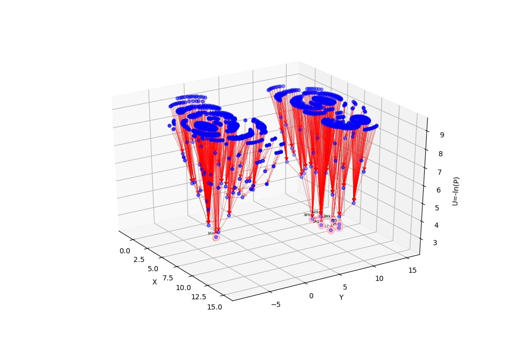
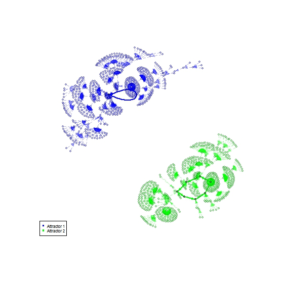

Boolean network attractors Landscape
An intuitive method to visualize Boolean network attractors landscape based on probability distribution from trajectories
In this webpage, we provide the information about our method to draw Boolean network attractor landscape.
How to plot a 3D view of a Boolean network attractor landscape?
Here we propose an intuitive method to visualize Boolean network attractors' landscape based on probability distribution from trajectories
3D view of a model of cell cycle
Here, we provide an example plot of the 3D view of Boolean network attractors landscape from our intuitive method.
There are two basins of attraction: attractor 1 is a basin of attraction on the left and attractor 2 a basin of attraction on the right.

Compared with the state-of-the-art software BoolNet generated Boolean network attractors' landscape
Below is an example for the visualization of the basins of attraction in a cell cycle network from BoolNet.
There are two basins of attraction: attractor 1 labeled with blue and attractor 2 labeled with green.
